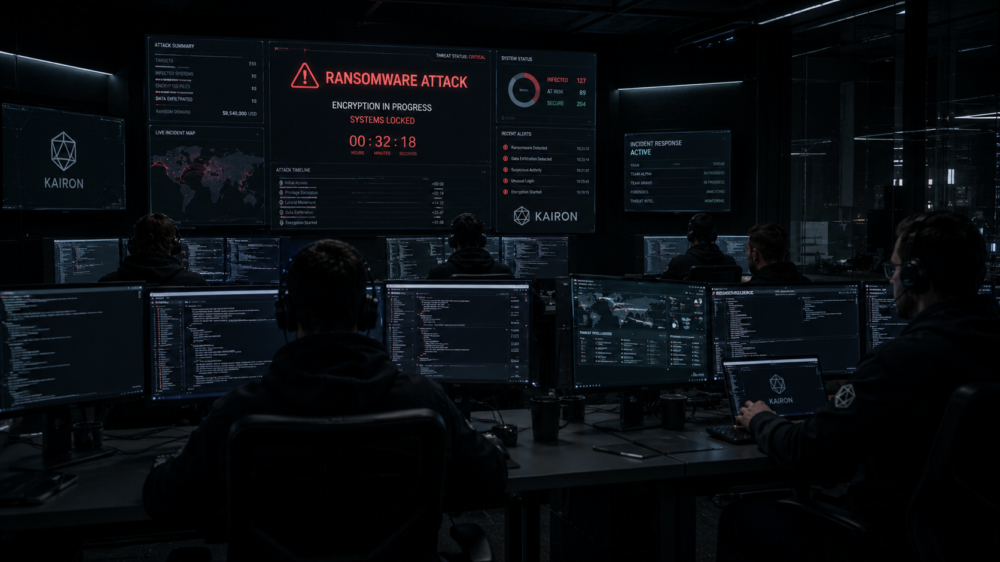
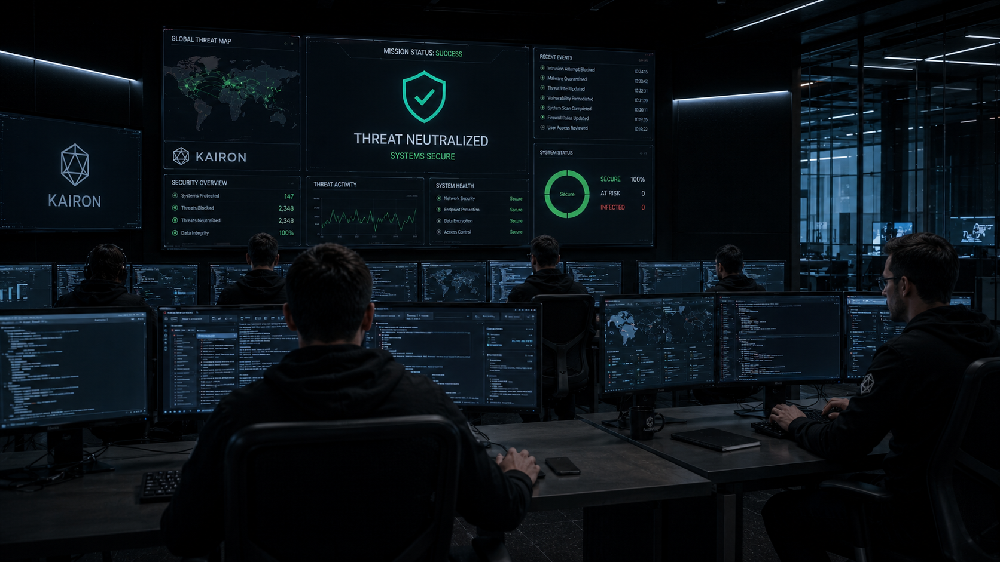

OP — 0027 / UNDISCLOSED
Classification Notice
Full operational details are restricted under binding confidentiality agreements and applicable international security frameworks. The following represents a declassified summary approved for limited disclosure by the client's security board.
Overview
The Black Shield Initiative was a classified joint operation by Kairon's Cipher Division and Vanguard Unit, supporting a sovereign wealth institution facing sustained, sophisticated adversarial pressure attributed to a state-aligned threat actor. The engagement combined offensive cyber intelligence operations with hardened physical security protocols.
The threat actor had maintained persistent access to portions of the client's infrastructure for an estimated period of 18 months prior to Kairon's engagement, operating with a level of sophistication consistent with a nation-state attribution.

Methodology
The Cipher Division conducted a multi-phase offensive cyber intelligence operation to fully map the threat actor's access vectors, implant infrastructure, and exfiltration channels before any remediation action was taken — ensuring total situational awareness prior to closure.
The Vanguard Unit simultaneously hardened the client's physical security posture across three facilities, addressing the physical layer vulnerabilities that had enabled portions of the cyber intrusion. Detailed methodology withheld under classification.
Outcome
The threat actor's operational capacity was significantly degraded. All identified access vectors were closed simultaneously to prevent migration to backup infrastructure. Client systems were hardened to a classified protection threshold.
Full attribution analysis and technical debrief were delivered under secure protocol to the institution's board of directors and relevant government partners. No further incidents reported following operation closure. Client retained Kairon for an ongoing monitoring retainer.
